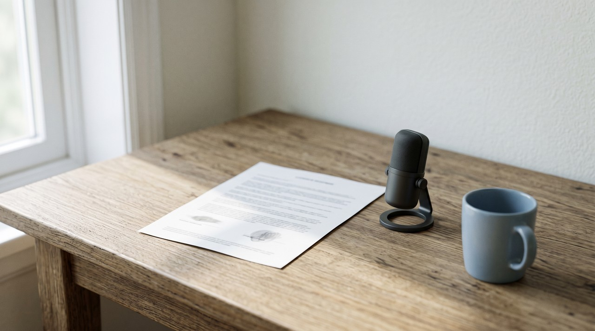

Coqui XTTS alternative: Coqui shut down, so which voice cloning can you use commercially?

XTTS v2 is free to download, but its Coqui Public Model License only allows work where you receive no direct or indirect payment. The company that used to sell a commercial licence, Coqui, shut down in January 2024. So there is nobody left to buy one from today. If you do paid work, like monetized videos, you need a model under a permissive licence like MIT, for example GPT-SoVITS.
| Question | XTTS v2 (Coqui) | GPT-SoVITS | VoiceClone |
|---|---|---|---|
| Model licence | Coqui Public Model License, non commercial | MIT | Built on GPT-SoVITS, commercial use allowed |
| Can you earn from the audio | Not under the licence | Yes | Yes, with your own voice |
| Who maintains it | The company closed, a community fork keeps the code going | The GPT-SoVITS project on GitHub | Inam, the person who built it |
| Audio it asks for | A 6 second clip | 5 seconds for a quick clone, 1 minute to fine tune | 1 to 3 minutes for the clone |
| Languages | 17, Hindi and Arabic included | English, Japanese, Korean, Cantonese and Chinese | English only |
| Setup | Python and commands | Python and commands | A normal Windows app |
| Cost | Free to download | Free | One voice free, then $49 one time |
Written by Inam. I built VoiceClone on top of GPT-SoVITS, so read the comparison below knowing that. My other engineering notes are on designesh.com. Last updated 28 September 2026.
When you look for a free voice cloner to run yourself, XTTS is usually one of the first names you find. It clones a voice from a few seconds of audio, and it speaks 17 languages. Almost every tutorial makes it look free. So a lot of people build it into their YouTube channel or a client project, and they only read the licence later.
That licence is the problem. XTTS v2 is published under the Coqui Public Model License, so it only allows use where you get no payment, direct or indirect. Coqui was the company that could have sold you a commercial licence, but they shut down in January 2024. The model is still online, but the shop that sold the paid version is gone.
If you earn any money from the audio, do not build on XTTS v2, and use a model with a licence like MIT, such as GPT-SoVITS.
Why is XTTS a problem now that Coqui is gone?
Coqui was the company behind the Coqui TTS library and the XTTS models. People from Mozilla's old speech team started it, and for a few years it was the main name for open source text to speech. One of its founders announced it was shutting down in early January 2024, and on 5 January 2024 users were already asking about it in the Coqui TTS discussion on GitHub. Today the coqui.ai website just shows a page not found error.
But the model files stayed online. The XTTS v2 page on Hugging Face still offers the download and names the Coqui Public Model License. That licence was always meant to come with a second choice. You could use it free for non commercial work, or you could pay Coqui for a commercial licence, and with Coqui gone only the first half is left.
Does a monetized YouTube video count as commercial use?
I read the licence text in the XTTS v2 files and it is plain about this. It says non commercial use counts only "so far as you do not receive any direct or indirect payment" from the model or its output. It also says that use for revenue generating activity is not a non commercial purpose.
So think about three real cases. First, a narration for a family video you never monetize fits the licence. A narration on a monetized YouTube channel earns ad money, and ad money is a payment arising from the output. A voiceover you deliver to a client earns you a fee directly. I am not a lawyer, but I cannot read those second and third cases as anything other than outside the licence.
Does the community fork fix the licence?
This is the part that confuses people. The maintained fork by Idiap keeps the Coqui TTS code working, and that code is under the Mozilla Public License 2.0, so it is fine for commercial work. But the code and the trained model are two different things. The fork fixes the software that runs the model, but it cannot change the licence on the XTTS v2 model file, because that file still belongs under the Coqui Public Model License.
What should an XTTS replacement give you?
If you are leaving XTTS, you probably want the same three things it promised. You want cloning on your own machine, no monthly fee, and a voice that sounds like the person. Then you add a fourth thing that XTTS cannot give you any more. You need a licence that lets you earn from what it makes.
In plain words, you should look for a model with a normal permissive licence like MIT or Apache 2.0. Those licences let you use the software commercially, and they do not depend on a company staying in business to sell you permission. If the company behind it closes tomorrow, the licence you already have still stands.
And you should keep the voice itself on your own disk. When a voice is trained into a file on your computer, nobody can switch it off. It does not matter if a subscription lapses or a company shuts down like Coqui did. I wrote about that same problem when PlayHT closed, in the PlayHT alternative article.
How does VoiceClone replace XTTS, and where does XTTS still win?
VoiceClone runs GPT-SoVITS, and the GPT-SoVITS project on GitHub is under the MIT licence. It lives inside a normal Windows app for Windows 10 and 11, so you deal with no Python and no terminal. You give it 1 to 3 minutes of your normal talking, and the app looks at that recording for noise, clipping and volume before it clones anything. After that you write a script, and your own voice reads it back to you.
Each line is generated a few times. A speech recognizer listens to every take and marks each word, so one bad word gets redone on its own while the rest of the clip stays. The Make it perfect button trains a true copy of your voice on your own PC, in under an hour on a normal NVIDIA card. After the one time setup download of about 1.3 GB, it works fully offline and nothing is ever uploaded.
What you make with your own voice is yours to use commercially, monetized videos and client work included. The free version lets you clone and fully train one voice, and then generate 3 times to hear it. The $49 one time license opens the rest, and there is no subscription behind it.
Now I will tell you the honest part, because XTTS does some things better.
- XTTS v2 speaks 17 languages, with Hindi and Arabic among them, and VoiceClone speaks English only.
- XTTS clones from a 6 second clip, but VoiceClone asks for 1 to 3 minutes, because a longer sample gives a closer voice.
- XTTS runs on Mac and Linux, or anywhere Python runs, and VoiceClone is a Windows app.
If you need Hindi or Arabic narration for a project that never earns a cent, XTTS is still a fine choice. If you earn money from the voice, move to something like GPT-SoVITS, and if you want it without the setup, that is what VoiceClone is for.
FAQ
Is XTTS v2 free for commercial use?
No, because XTTS v2 is under the Coqui Public Model License, and that only covers work where you receive no direct or indirect payment. Coqui shut down in January 2024, so you can no longer buy a commercial licence.
Is Coqui TTS still maintained?
The original Coqui repository is no longer maintained, but Idiap keeps a fork of the code going under the Mozilla Public License 2.0. That fork covers the code only, and the XTTS v2 model still carries its non commercial licence.
What is the best Coqui XTTS alternative for YouTube?
You should pick a model under a permissive licence like MIT, so a monetized channel is covered. GPT-SoVITS is one, and VoiceClone runs it inside a Windows app if you do not want to set up Python.
Can I keep using XTTS for personal projects?
Yes, the licence allows it if nobody pays you anything for the project or its audio. The trouble starts the moment the audio earns money, even indirectly through ads.
Sources: the XTTS v2 model page and its LICENSE.txt on Hugging Face, the Coqui TTS "Coqui-ai is shutting down" discussion on GitHub, the Idiap coqui-ai-TTS fork on GitHub, and the GPT-SoVITS project page on GitHub. I read all of them on 28 September 2026.
Hear your own voice come back.
The free Windows app clones and fully trains one voice, yours, on your own PC. No account, no upload, and the download starts right away.